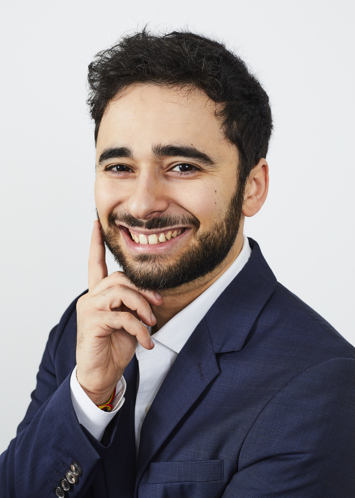

Elie Bermot
Hello, my name is Elie Bermot and I am a PhD student at Pasqal and at IRIF in Paris since August 2023.
I am interested in Quantum Algorithms, Quantum Optimization, Quantum Adiabatic Algorithms and Quantum Simulation.
Mail: elie.bermot at pasqal dot com and elie.bermot at irif dot fr

Talks
- Exploring Quantum Annealing and Tunneling: Harnessing their Potential for Independent Set Sampling. (May 8th, 2024)
Talk at the 2024 IQC-PCQT workshop.
[slides]
Publications
-
Elie Bermot, Christa Zoufal, Julian Schuhmacher, Michele Grossi, Francesco Tacchino, Sofia Vallecorsa, and Ivano Tavernelli. Quantum Generative Adversarial Networks For Anomaly Detection In High Energy Physics.
[arXiv]
Experience
-
R&D Quantum Application Engineer at Pasqal in Palaiseau, France (April 2023 - present)
PhD focused on quantum optimization for combinatorial problems, mostly using quantum annealing procedures.
-
Quantum Community team intern at IBM Research in Zurich, Switzerland (September 2022-March 2023)
Team that focuses on workforce development, advocacy, and outreach activities in Europe and Africa for IBM Quantum.
Education
-
PhD in Quantum Optimization for Combinatorial problems at Institut de Recherche en Informatique Fondamentale (IRIF) and Pasqal in Paris, France. (August 2023 - present)
Department: Algorithmes et complexité.
Supervisors: Simon Apers , Frédéric Magniez (IRIF) and Louis-Paul Henry .
-
Master of Quantum Engineering at ETH Zurich in Zurich, Switzerland. (September 2020 - december 2022)
Master thesis: Quantum Generative Adversarial Networks For Anomaly Detection In High Energy Physics.
[pdf]
Supervisors: Christa Zoufal, Ivano Tavernelli and Renato Renner.
-
Bachelor of Science and Master in Physics at Ecole polytechnique in Palaiseau, France. (September 2017 - August 2021)
Bachelor thesis: Fermionic Hubbard model with Diagrammatic Monte Carlo
[pdf]
Supervisors: Fedor Simkovic, Thomas Schafer and Michel Ferrero.
-
Classes preparatoires aux grandes ecoles at Lycee Louis le Grand in Paris, France (September 2014-August 2017)
Post-secondary preparatory classes in Advanced mathematics, Physics, Engineering Sciences preparing for international competitive entrance examinations to the French “Grandes Ecoles”